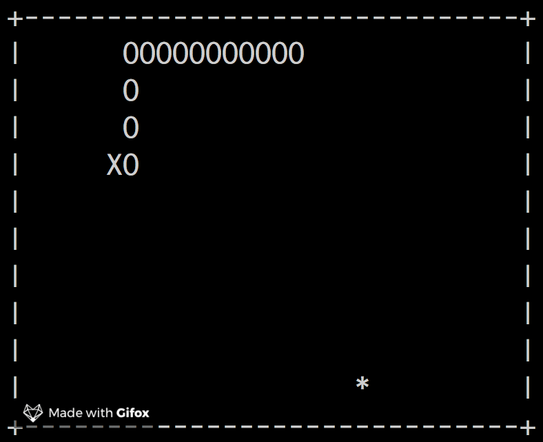
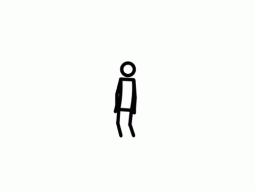
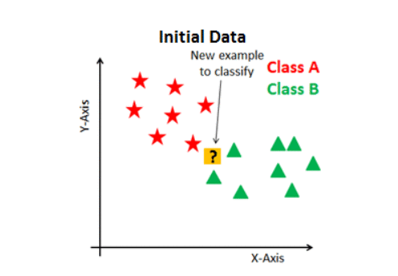
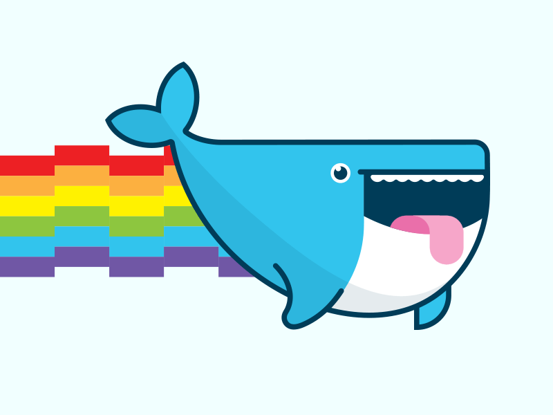
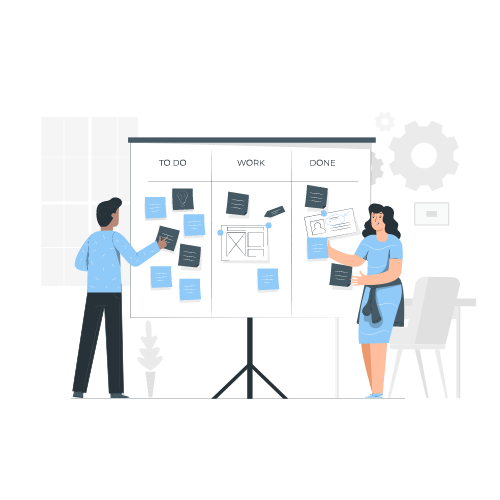
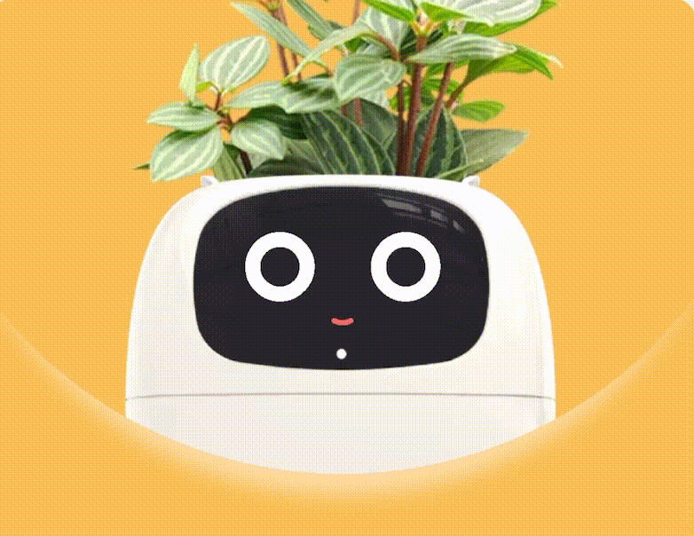

J'ai effectué des projets dans de nombreux domaines durant mon parcours scolaire mais
aussi pendant mon temps personnel. Je vais donc les présenter un à un sur cette page.
Mes compétences et projets
Réaliser un développement d'application
Jeu du snake manuel
Fini

Jeu Snake en C sur terminal Linux. Génération aléatoire de blocs, collisions et score dynamique.
Voir plusApplication EllaDanse
En cours

Développement d'une application de danse.
Voir plusOptimiser des applications informatiques
jeu du snake automatique
Fini
Knn et Kmeans
Fini

Programmation de Knn et Kmeans en utilsant des calculs (manhattan, euclidienne...)
Voir plusAdministrer des systèmes informatiques communicants complexes
Automatisation de fichiers
Fini

Automatisation de conversion de fichiers web à l'aide de Docker, Bash et PHP.
Voir plusInstallation de service réseau avec Apache
FiniInstaller et configurer les services nécessaires au déploiement d’un site dynamique.
Voir plusGérer des données de l'information
Création d'une base de donnée
FiniBase de donnée pour la gestion des championnats de football
Voir plusImplémenter une base de donnée
En coursBase de données pour admissions, inscriptions et résultats des étudiants de BUT.
Voir plusConduite de projet
Site web Jeux Olympiques
FiniGestion de projet
En cours

Rédaction de la note de cadrage et des exigences logicielles pour une application de danse.
Voir plusTravailler dans une équipe informatique
Journal
FiniCréation graphique d’un journal intégrant des jeux, articles, et caricatures politiques.
Voir plus Voir le PDFTeam building
Fini
Autres projets
Portfolio Web
En cours
Jardiniere Connectée
Fini

Creation de zéro d'une Jardiniere et développement de son automatisation.
Voir plus